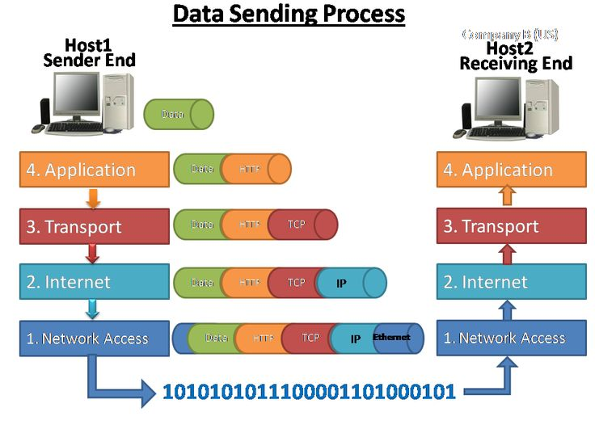

HTML files become web pages when they become accessible online, not just locally
This is possible thanks to a stack of communication protocols: WiFi/TCP/IP/HTTP/HTTPS
in fact, a copy of the HTML+CSS+JS files is saved in a secret local folder which is managed by the browser
HTTPS is designed to make browsers follow up links or download needed files transparently
clicking on <a>s sends us to a new page, local or web
online images, style files etc. are fetched and redered
we realise that this is all networked only when it stops working
each page request is dealt the same
there is no history of a visit to a site, only our browser may remember
Yet,
we feel progress through stages of the visit, e.g., in e-commerce
pages are customised for country, language etc.
they remember us returning
A small text file which is saved in a secret local folder which is managed by the browser
keep record of previous visits and help in customising pages
inside, there’s a tiny database organised in atribute/value pairs:
"name"="ale"; "last_visit"="15-11-24"; "hour"=14; ...
JS functions create/read/amend cookie files
In principle, it’s public information, and local
Let’s visualise cookies.
Please add SQLite Manager (by Lunu) to your Browser!
@firefox: https://addons.mozilla.org/en-US/firefox/addon/sqlite-manager-webext/
try
on your browser, or follow instruction on http://mzl.la/1BAQULj
Example: Firefox 132 on Win11:
C:\Users\aless\AppData\Roaming\Mozilla\Firefox\Profiles\kqgptv3l.default-release\cookies.sqlite
Open file cookies.sqlite with the browser extension
search for our cookie, e.g. with
The same process can be done by opening the cookies file directly from the file systems, as described here (for Win 10).
Example: Crome on Win10:
C:\Users\aless\AppData\Local\Google\Chrome\User Data\Default\Network
Design user profiling for your MA COM refactoring page:
ask one or more questions using buttons
record choices/preferences in cookies.
on second visit we shall salute them with their name and invited them to enroll!
Users can assign values to variables thanks to forms.
Forms require attention as there are many form attributes and details.
Please complete the subsequent units a la carte: look at the forms you deem useful for your work on a COM landing page.
Today, browsers collect lots of user behaviours, e.g., scroll speed in Facebook-like pages.
Independent web sites may create a user base or a community around a web presence
Idea: use forms to collect emails (not indentities) to manage a simple circular email system, weekly or monthly.
GDPR regulation restricts consent, safe storage etc.
See the Mailchimp software.
inside folder src see files rename-me.html, mystyle.css and script.js
open them all in VS Code, read the HTML and the CSS
Notice how checkCookie() is executed every time the browser (re)loads <body>
next, load the page on Firefox etc and open the console (CTRL+SHIFT+k)
check the cookie then refresh to check second-time behaviour
read the script.js file line by line, don’t move on until you understood
Look up on W3Schools parts that are new, e.g., while
place a console.log() or an window.alert() at each step to visualise the content of the variables
example:
becomes